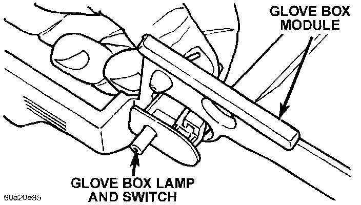

Glove Box Lamp Switch: Service and Repair
REMOVALWARNING: ON VEHICLES EQUIPPED WITH AIRBAGS, REFER TO AIR BAGS AND SEAT BELTS/AIR BAGS BEFORE ATTEMPTING STEERING WHEEL, STEERING COLUMN, OR INSTRUMENT PANEL COMPONENT DIAGNOSIS OR SERVICE. FAILURE TO TAKE THE PROPER PRECAUTIONS COULD RESULT IN ACCIDENTAL AIRBAG DEPLOYMENT AND POSSIBLE PERSONAL INJURY.
1. Remove the glove box module as described.
Glove Box Lamp And Switch Remove/Install:

2. From the back side of the glove box module, squeeze the retaining tabs on the glove box lamp and switch housing together and push the unit out the front of the module through the mounting hole.
3. To install the glove box lamp and switch unit, insert the unit through the mounting hole from the front of the glove box module and push in on the unit firmly, until the retaining tabs snap into place.
4. Reverse the remaining removal procedures to complete the installation.